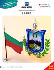

FUNDACION DE LA PAZ
Erick Alan Escobar Flores
historiaLa Paz (oficialmente Nuestra Señora de La Paz)[6] es la sede de gobierno y centro financiero de Bolivia,[7] además de ser la capital del departamento de La Paz. En la ciudad se albergan los órganos ejecutivo, legislativo y electoral. La Plaza Murillo, plaza principal de la ciudad, se encuentra a una altitud aproximada de 3636 m s. n. m. Ubicada en el oeste de Bolivia, a 68 km al sureste del lago Titicaca, La Paz está situada en un cañón creado por el río Choqueyapu, rodeada por las altas montañas del altiplano, entre ellas el nevado Illimani, cuya silueta ha sido el emblema más importante de la ciudad desde su fundación. La ciudad es la metrópoli más alta del mundo. Con una topografía accidentada, ofrece vistas únicas de la cordillera Real. Debido a su elevación, tiene un clima subtropical de altura, con veranos lluviosos e inviernos secos. La Paz es el centro político, académico y cultural más importante del país, además de ser una de las ciudades con mayor nivel de desarrollo sostenible en Bolivia.[13][14] Según el censo 2024 de Bolivia, el municipio de La Paz tiene una población de 755 732 habitantes, siendo el tercer municipio más poblado del país. Es parte del área metropolitana de La Paz, con una población que asciende a 1.5 millones de habitantes, junto con la ciudad vecina de El Alto (de 885 825 habitantes) y otros municipios, como Viacha y Achocalla. Fue fundada el 20 de octubre de 1548 por el conquistador español Alonso de Mendoza en un valle ya conocido por diversos pueblos indígenas como Chuquiago Marka.[18] Fue capital de la Intendencia de La Paz, región administrativa del Virreinato del Río de la Plata. La ciudad experimentó numerosas revueltas a favor de su independencia; en 1781, el líder indígena Túpac Katari sitió La Paz por seis meses y, el 16 de julio de 1809, el patriota Pedro Domingo Murillo inició una revolución en la ciudad, que forma parte de las guerras de independencia hispanoamericanas. La Paz pasó a ser la sede de gobierno del país tras la guerra federal de 1899, cuando las regiones del norte y el sur disputaron la prominencia política y hegemónica de Bolivia.[23][24] Como tal, La Paz alberga el Palacio Quemado y la Casa Grande del Pueblo, sedes del poder ejecutivo, y el Palacio de la Asamblea Legislativa Plurinacional, sede del poder legislativo. El Tribunal Supremo Electoral, sede del poder judicial, se encuentra en Sucre, la capital constitucional del país. Actualmente, La Paz es un importante centro político, administrativo, económico y financiero de América Latina; responsable de generar el 27 % del producto interno bruto (PIB) del país, además de ser la sede central de la mayoría de bancos, empresas e industrias bolivianas. La Paz posee un PIB nominal de 6543 millones de dólares estadounidenses, un PIB per cápita nominal de 3506 dólares estadounidenses y un PIB PPA per cápita de 7971 dólares estadounidenses. Es considerada una ciudad tipo "Gamma", por el GaWC.[27] Asimismo, desde el 7 de diciembre de 2014, la ciudad es catalogada como una de las nuevas siete ciudades maravillas del mundo. La Paz se destaca también por ser un importante centro cultural latinoamericano debido a su gran diversidad y cosmopolitismo; alberga monumentos y sitios importantes, como la Basílica de San Francisco, la Catedral Metropolitana, la plaza Murillo, la calle Jaén, y diversos museos de renombre internacional. La ciudad es también conocida por sus mercados, particularmente el Mercado de las Brujas, y por su animada e intensa vida nocturna.
 | .jpg) |
.jpg) | .jpg) |